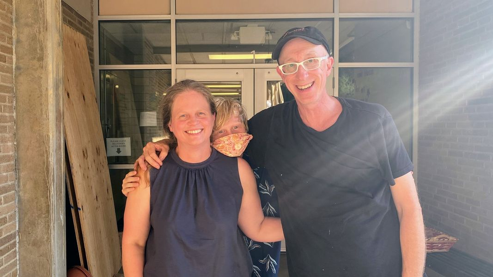

Timeline photos
This is my friend Loucile Powers with her son Theo.
On the very first day of kindergarten, Loucile's daughter, Caroline, took my son by the hand and walked off to play in the garden at Spring Garden Waldorf School.
We've been close ever since.
I think Loucile worries a lot about me. She'll call me every so often to gently ask if the random crazy thing I'm doing at the moment is such a good idea. Sometimes she worries about my personal safety. Sometimes she worries about my legal safety.
Loucile is not only a family friend, she's the family attorney. She does all our estate planning.
Last year I personally got sued by the city of Akron for sheltering homeless people on my personal property. The Institute for Justice who represented us through all of the other legal battles we had could not take this case.
So Loucile bravely volunteered to represent me and the Church of the Nomadic Spirit. The lawsuit was against both of us.
In the original lawsuit the city was seeking to make is so I would be fined or go to jail if I put a tent anywhere in Akron ever again. But that wasn't all. They also wanted to make it so that if I gave you a tent that you put on your personal land then you, the homeless person and me would be connected to this same court order. And WE ALL would face fines and jail time.
It basically was a Sage Lewis Homeless Poison Pill.
Loucile fought all of that.
In the end, the permanent order states that I cannot put another tent on 2 specific pieces of land. All the other items went away.
I still maintain that this is unconstitutional and an illegal use of government overreach.
You don't have to be a legal scholar to understand that if a person wants to shelter another human being on their personal property because there is absolutely nowhere else for them to go then: THAT PERSON SHOULD BE ALLOWED TO SHELTER THAT HUMAN BEING.
But that is not the city we live in.
Early on, I told the judge that I was compelled by God to do this work. She told me that there were more important laws than God's law.
At any rate, Loucile is asking for some compensation for the legal work she has done. I know she did WAY more than what she is asking for. She felt bad about charging me at all.
She is asking for $2000.
Is there any chance you would be able to help me with this legal bill?
Whatever I can't raise, I will personally pay Loucile. She deserves every penny. But my wife would appreciate if the community might be willing to help with this.
As always. I'm eternally grateful for your love and support.
You can donate to the cause here:
https://donorbox.org/homelesslegal